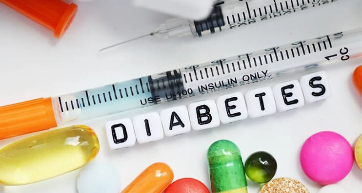
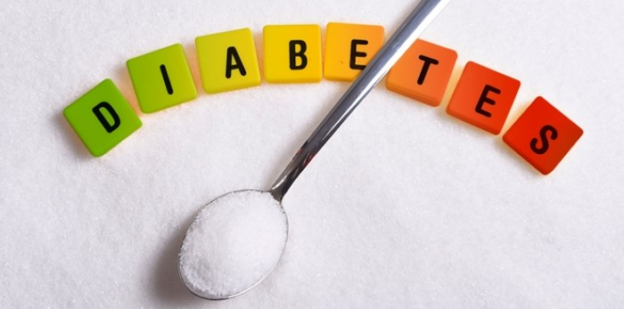

DİABETES MELLİTUS (ŞEKER HASTALIĞI)
Şeker hastalığına tıp dilinde “Diabetes Mellitus” adı verilmiştir. “Diabetes” havuz fıskiyesi, “Mellitus” bal, tatlı anlamına gelmektedir. M.Ö. 1500’lü yıllarda Mısır’da papirüslerde (Ebers papirüslerinde) aşırı idrar yapmakla kendini gösteren bir hastalık tarifi yapılmıştır. Hastalığa “Diyabet” ismini ilk kez Kapadokyalı hekim Aretheaus (M.S 130-200) vermiştir. M.S. 1000 yılında İbni Sina diyabetiklerde gangreni tanımlamıştır. 1679 yılında Thomas WILLIS şeker hastalarının idrarında şeker bulunduğunu saptamıştır. 1779 yılında Mathew DABSON şeker hastalarının kanında yüksek oranda şeker olduğunu ispatlamıştır. 1889 yılında Paul LANGERHANS isimli bilim adamı pankreasın beta hücrelerinde hasar oluşması durumunda şeker hastalığının oluştuğunu göstermiştir.
İnsülin hormonunun keşfini Kanadalı bilim adamları Frederick BANTING ve Charles BEST 1921 yılında yaptılar ve Nobel Ödülü aldılar. Şeker hastalarına tablet şeklinde tedavi çalışması ilk kez İstanbul Üniversitesi Öğretim Üyesi Prof. Dr. Frank 1926 yılında yapmıştır.
İnsülini bulan Frederick BANTING’in doğum günü olan 14 Kasım, Dünya Sağlık Örgütü (WHO) ve Uluslararası Diyabet Federasyonu (IDF) tarafından 1922 yılından beri Diyabet Günü olarak kabul edilmiştir.
GİRİŞ
Glikoz, fruktoz ve galaktoz karbonhidratların sindiriminin son ürünleridir. Bunun yaklaşık %80’i glikozdur. Glikozun vücudun doku hücrelerinde kullanılabilmesi için hücrenin içine taşınması gerekmektedir. Bu da çoğu zaman hücre membranında bulunan taşıyıcı protein molekülleri ile olur. İnsülin glukoz ve diğer monosakkaritlerin (galaktoz,fruktoz) transportunu büyük ölçüde arttırır. İnsulin yüksek oranda salgılanması durumundaki glikoz transport hızı, salgılanmadığı döneme göre 10 kat artar. İnsülin pankreasta bulunan Langerhans adacıkları içindeki ß hücrelerinden salgılanır. İnsülin enerji bolluğuna eşlik eden bir hormondur. Yani diyette yüksek miktarda enerji veren karbonhidrat ve proteinlerin bulunması durumunda yüksek miktarda salgılanır. İnsülin dokularda glukoz alımını ve kullanımını arttırır. Fakat fazla glikozunda karaciğer ve kas dokusunda glikojen olarak depolanmasını sağlar. Glikojen olarak depolanamayan fazla glikoz yağa çevrilir ve yağ dokusunda depo edilir
DİABETES MELLİTUS
Diyabet;
- İnsülin sekresyonun yokluğu,
- İnsülin sekresyonunun yetersizliği,
- İnsülin direnci,
ile ortaya çıkan, başta karbonhidrat olmak üzere, yağ ve protein metabolizmasını etkileyen, yüksek kan şekeri ile seyreden, kısa ve uzun sürede yüksek oranda olumsuz yan etkileri olabilecek metabolik bir hastalıktır.
Tipleri :
- Tip 1
- Tip 2
- Gestasyonel Diyabet
- Diğer Spesifik Tipler
Tanı kriterleri: Aşağıdaki durumlardan birinin olması Diyabetes Mellitus tanısı için yeterlidir.
Açlık kan şekeri: ≥ 126 mg/dl
Tokluk kan şekeri ≥ 200 mg/dl
75 mg OGTT 2.saat ≥200 mg/dl (OGTT= Oral glukoz tolerans testi)
HbA1C ≥ %6,4
TİP 1 DIABETES MELLITUS
Genetik yatkınlık zemininde (genetik yatkınlık ≠ genetik geçiş) diyet faktörleri, virüsler, toksinler gibi faktörlerin otoimmuniteyi tetiklemesi ve pankreas ß hücresinde %80-90 oranında harabiyet oluşturması sonucu hastalık klinik belirti vermeye başlar. Başlangıç açısından okul öncesi dönem (6 yaş civarı), puberte dönemi (13 yaş civarı), geç adolesan dönemi (20 yaş) dönemlerinde pik yapar
Tedavide insülin şarttır. Aksi halde kan şekerinin aşırı yükselmesi, yağ asitlerinden keton oluşumu ile karakterize bir ketoasidoz oluşur, bilinç kaybı ile seyredebilir
TİP 2 DIABETES MELLITUS
İnsülinin hücre düzeyinde etkisizliği, pankreastan insülinin yapımının kısmen yetersizliği durumunun bir arada olduğu bir hastalıktır. Genel olarak fazla görülen diyabet tipi bu tiptir. Genellikle orta yaş ve sonrasında görülür. Fazla kilosu olanlarda (BMİ ≥25) ve ailesinde diyabet hastalığı öyküsü bulunan kişilerde daha fazla görülür. İlk önce insülin direncini azaltan ilaçlar tercih edilir. HbA1c seviyesine göre bu ilaca ek 2’li veya 3’lü ilaç kombinasyonları tedaviye dahil edilir. HbA1c’nin çok yüksek seyretmesi halinde insülin tedavisi işin içine girmektedir
GESTASYONEL DIABETES MELLİTUS
İlk kez gebelik döneminde ve genellikle 24.haftadan sonra ortaya çıkar. Gebelik döneminde artan hormonlar sebebiyle ortaya çıkmaktadır. Gebelik sonrası kan şekeri seviyeleri normale döner fakat kişinin diğer gebeliklerinde gestasyonel diyabet veya ileriki yaşam dönemlerinde Tip 2 DM gelişme olasılığı yüksektir
Gestasyonel diyabetik hastalarda, tedaviye diyete uyum kontrolleri ile başlanır. Metabolik kontrolü ideal düzeyde olmayan, fakat kan şekeri değerleri ideal düzeylerin biraz üzerinde olan hastalarda ve metabolik kontrolü iyi olmayan kan şekeri değişken olan diyabetiklerde vakit geçirilmeden insülin tedavisine başlanmalıdır. Gebeler oral (ağızdan) antidiyabetik ilaçlar kullanamazlar. Gebelik boyunca toplam kilo alımı 10-13 kg'ı aşmamalıdır
PREDİYABET (GİZLİ ŞEKER)
Eğer bir kişinin kan şekeri düzeyi normalden yüksek olmasına karşın diyabet tanısı koymaya yeterli yükseklikte değilse bu durumda kişi pre-diabetik olarak tanımlanır. Doktorlar bazen yükselmiş kan şekeri düzeylerini ifade eden bu durumları kullanılan teste bağlı olarak bozulmuş glikoz toleransı veya bozulmuş açlık glikozu olarak tanımlarlar
Açlık kan şekeri: 100-126 mg/dl => Bozulmuş açlık glikozu
75 mg OGTT 2.saat 140-200 mg/dl (OGTT= Oral glukoz tolerans testi) => Bozulmuş glikoz intoleransı
HbA1C %5,7- 6,4
DİYABET KOMPLİKASYONLARI
Akut (Kısa vadede görülebilen) komplikasyonlar:
Bunlar sebebi farklı nedene bağlı fakat komayla sonuçlanabilen durumlardır. (Keton fazlalığı, kan şekeri fazlalığı keton birikimi olmayan, kan şekerinin aşırı düşük olması, laktik asit fazlalığına bağlı)
Kronik (Uzun vadede görülebilen) komplikasyonlar:
Kılcal damarların tutulumuna bağlı göz, böbrek ve sinir harabiyeti
Ana damarların tutulumuna bağlı kalp damar hastalıkları, beyin damar hastalıkları ve tansiyon yüksekliği gibi istenmeyen durumlar görülebilmektedir
ÖNERİLER
Diyabet açısından herhangi bir risk faktörü bulunmayan kişiler 45 yaşında ve 3 yıl aralıklarla diyabet açısından taranmalıdır. Fazla kilosu olanlar, 1. derece akrabada şeker hastalığı bulunanlar, gestasyonel diyabet tanısı almış veya ≥4,5 kg bebek doğurmuş olanlar, tansiyonu yüksek olan kişiler, kan yağ oranı yüksek olanlar, kalp damar hastalığı, beyin damar hastalığı olan kişiler daha erken ve daha sık (her yıl) diyabet açısından taranmalıdır
Farmakolojik tedavi öncesi ve beraberinde eğitim, egzersiz ve diyet kontrolü planlanmalıdır.
DİYABET AMELİYATI (METABOLİK CERRAHİ):
Halk arasında diyabet ya da şeker ameliyatı olarak da bilinir. Diyabetin ve obezitenin kontrol altına alınabilmesini sağlayan ameliyatları içermektedir.
Tip I diyabete sahip olan hastalar bu ameliyatlar için uygun değildirler. Tip II diyabet hastaları daha uygundurlar fakat tip 2 diyabet olup 10 yılı geçmiş şeker hastalarında pankreastan insülin üretimi de azalmış olabileceği için metabolik cerrahi öncesi kişide pankreastaki insülin seviyesini ölçmek gerekir. Metabolik cerrahi vücut kitle indeksinin 35’in üzerinde olanlara uygulandığı gibi medikal Tip II diyabet tedavisine yanıt vermeyen ve kitle indeksi 30’un üzerinde olan hastalar da metabolik cerrahi operasyonu olabilmektedir. Genellikle 4-6 arası küçük kesiler açılarak gerçekleştirilen operasyonlar farklı yöntemlerle yapılmaktadır. Bütün ameliyatlarda ortak özellik mideye müdahalede bulunup iştahı azaltıp gıda alımını kısıtlamak ve ilave olarak gıdaların ince bağırsağın son kısmına ulaşmasını sağlayacak kestirme yollar yapılmasıdır.
- Tüp Mide Ameliyatı (SJIT (sleeve gastrektomi and jejunoileal transit)):
Tüp mide ameliyatının en önemli amacı hastaların mide hacimlerini küçültmek ve açlık hormonu salgılanan bölge alındığı için iştahın da azalmasını sağlamaktır. Tüp mide ameliyatına ilave olarak ince bağırsağın başlangıcından ve son noktasından geriye doğru bir geçiş bağlantısı kurularak bazı gıdaların sindirilmeden ince bağırsağın son kısmına ulaşıp Glp-1 hormonu salgılanması amaçlanır. Böylece kişi hem kilo verir hem diyabeti düzelir.
- Gastrik Bypass: Midede oluşturulan torba ile ince bağırsağın alt kısmı birleştirilmektedir. İnce bağırsağın ilk etapta ayrılan üst kısmı ise tekrar alt kısma bağlanmaktadır. Gastrik by-pass’ta amaç midenin küçültülerek gıda tüketiminin azaltılması ve ince bağırsakta gıda emiliminin en aza indirilmesidir.
- İleal İnterpozisyon: İnce bağırsağın başlangıç ve bitiş kısımlarının yerlerini değiştirerek hormon seviyesini artırılması amaçlanmaktadır.
Dr. Mehmet Aziz SAYGIN
KAYNAKLAR:
- Guyton&Hall Tıbbi Fizyoloji
- Prof. Dr. Metin ÖZATA (drdiyabet.com)
- Prof. Dr. Erdinç ERTÜRK(Ders-Seminer Notları)
- Endokrinoloji (Prof. Dr. Şevki ÇETİNKALP)
- Türk Diyabet Vakfı
- Op Dr. Ersoy TAŞPINAR (Medicana Grup)